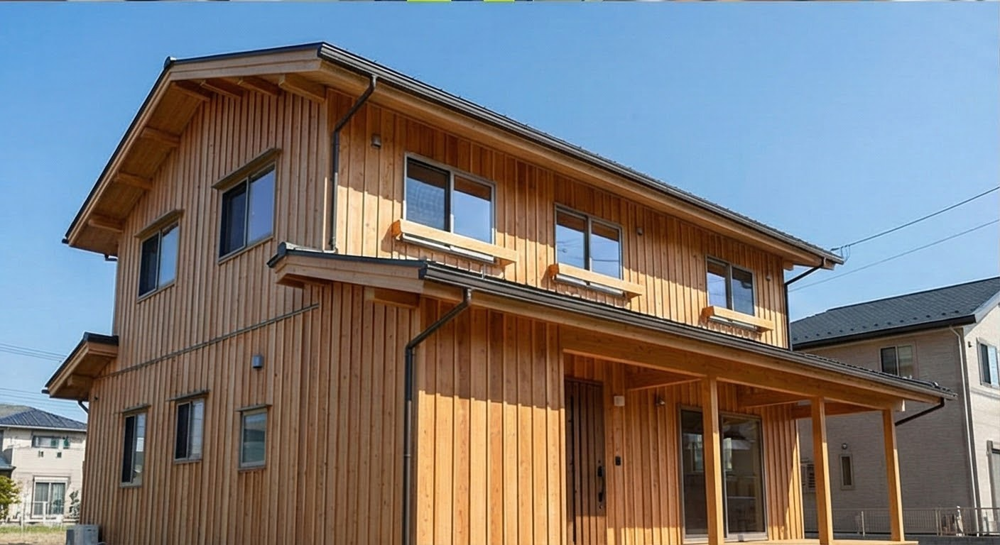

AI活用
月8万円の削減！工務店がAI導入で最初にやるべき3つのこと
無料のAIツールだけで事務作業の時間は半分以下にできます...
AI × 工務店 × アフターメンテナンス
「売りっぱなし」からの脱却。
AIで創出した時間は、すべてアフターメンテナンスのために。
ブログも資料も数分で完成。
浮いた時間で現場に行けます。
手書き風の手紙もAIでサポート。
お客様との絆を深めます。
元施工管理だからわかる、
現場のリアルな悩みを解決します。
BuildMate 代表 / AI活用コンサルタント
長年、施工管理として現場を走り回り、夜は事務所で書類作成に追われる日々を過ごしました。お客様への連絡がおろそかになり、信頼を損なう悔しさも痛いほど知っています。
その後、業務効率化システムの販売・導入支援の現場にも立ちました。そこで目の当たりにしたのは、「高機能なシステムほど、忙しい現場では定着しない」という現実です。
現場の苦労、システムの限界。その両方を知り尽くした私がたどり着いたのが、誰でも直感的に使える「AI」でした。
パソコンに向かう時間を減らし、本来向き合うべき「お客様の笑顔」のために時間を使ってほしい。それが私の使命です。
無料のAIツールだけで事務作業の時間は半分以下にできます...
定期点検の案内が事務的になっていませんか？お客様に響く文章作成術...

事例「イメージが湧かない」による失注を防ぐ。商談中にその場で作成...